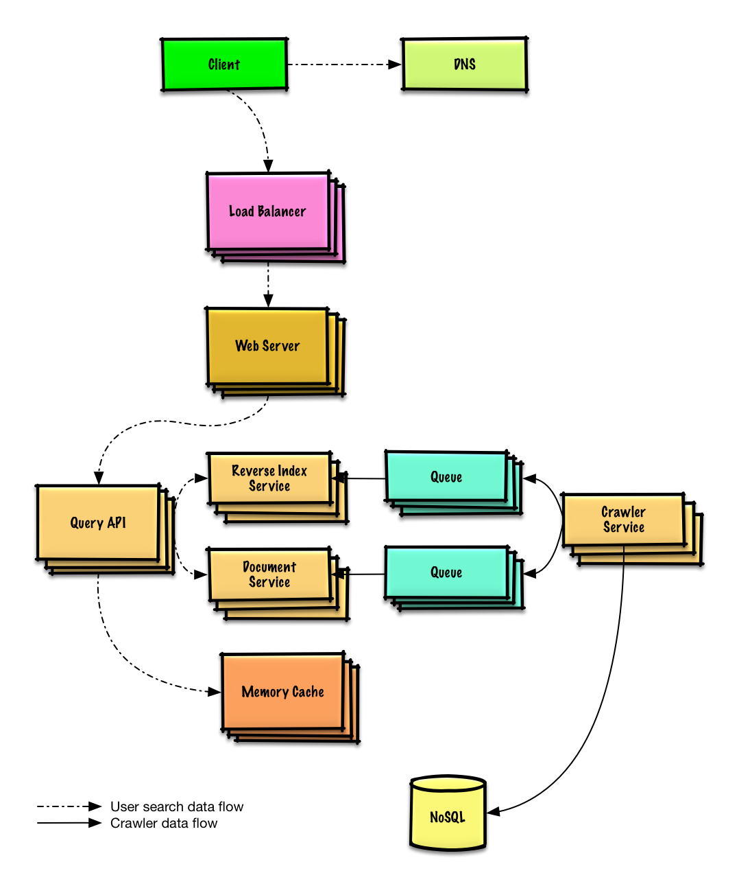
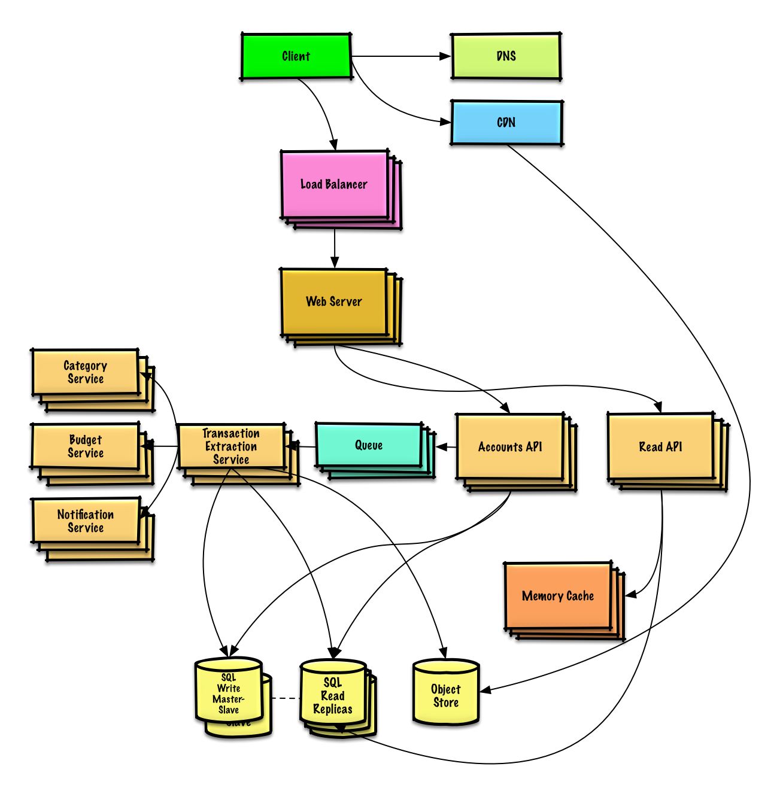
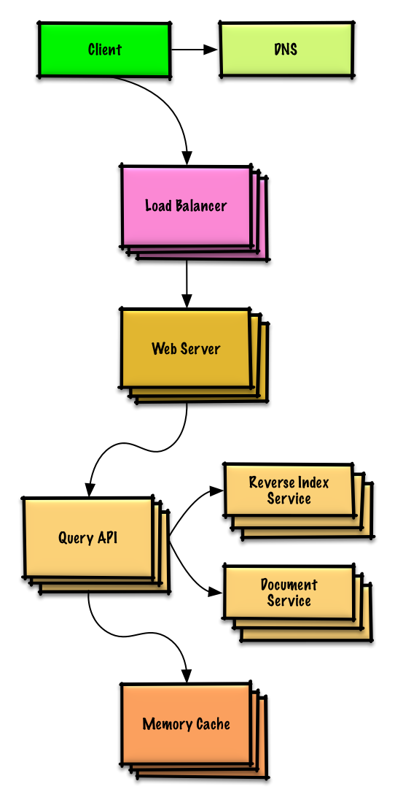
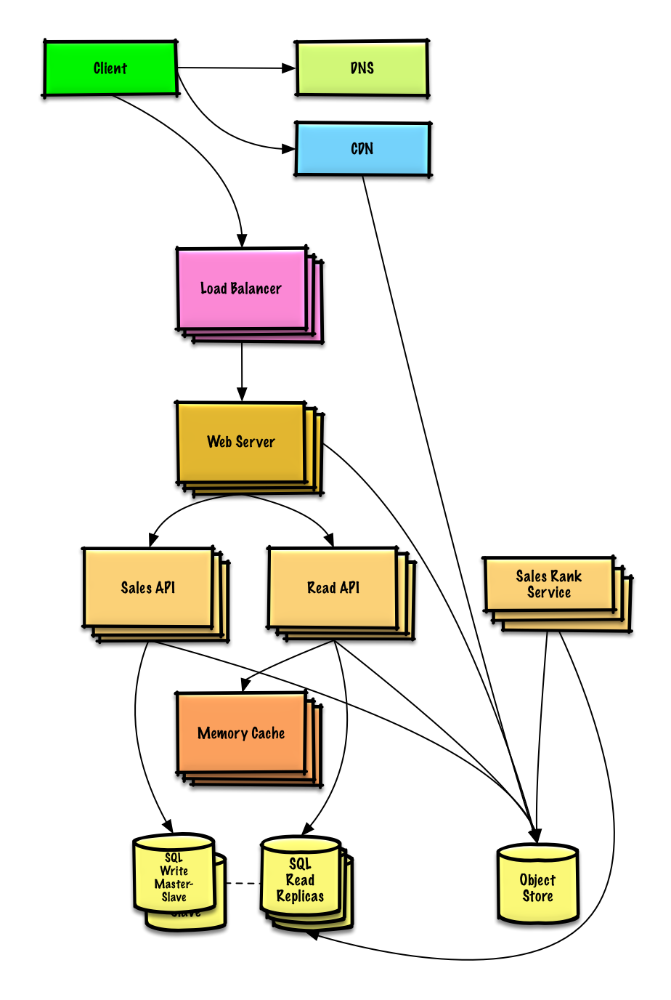
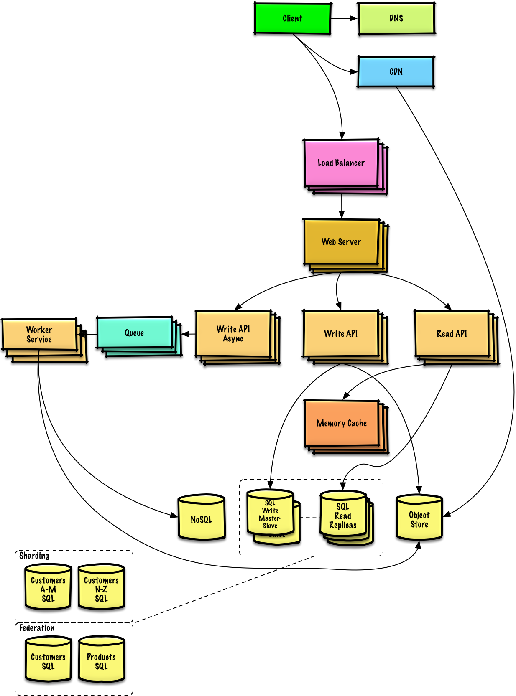

System Design Solutions
Common system design interview questions with sample discussions, code, and diagrams.
System Design Interview Questions
Design Pastebin.com (or Bit.ly)
Design a URL shortening service like Pastebin or Bit.ly.
Hash table
SQL
Cache

Design Twitter Timeline and Search
Design Twitter's timeline and search functionality.
Fan-out
Timeline
Search

Design a Web Crawler
Design a web crawler that efficiently crawls web pages.
BFS
MapReduce

Design Mint.com
Design a personal finance management application.
SQL
ETL

Design Social Network Data Structures
Design the data structures for a social network.
Graph DB
BFS

Design a Key-Value Store for Search
Design a key-value store for a search engine.
Key-value
NoSQL

Design Amazon Sales Ranking
Design Amazon's sales ranking by category feature.
Ranking
SQL

Scale to Millions on AWS
Design a system that scales to millions of users on AWS.
AWS
Scaling

Object-Oriented Design Interview Questions
Note: This section is under development
Design a Hash Map
OO DesignDesign a hash map with collision handling.
View SolutionDesign a LRU Cache
OO DesignDesign a least recently used cache.
View SolutionDesign a Call Center
OO DesignDesign a call center with employees and calls.
View Solution